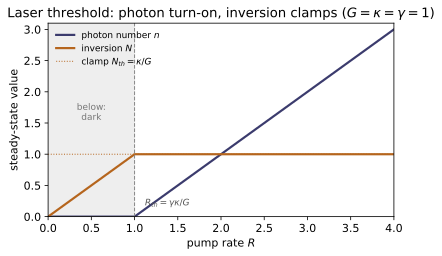
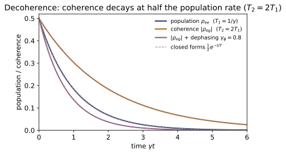
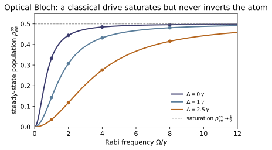
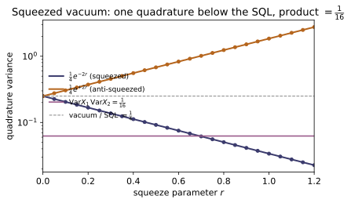
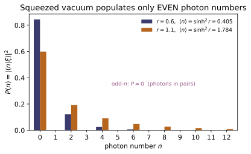

QO-01 — Classical & Quantized Light — Modes, Fock & Coherent States
Quantum Optics trunk · QO/QO-01_classical_quantized_light · open in the Teaching Network
A beam of light is a set of field modes; classically each is an oscillation with a complex amplitude $\alpha$ (~EM-15). Quantum optics promotes that amplitude to ladder operators, so one mode is a quantum harmonic oscillator (~QM-09, bridge B6): $H=\hbar\omega(a^\dagger a+\tfrac12)$, $[a,a^\dagger]=1$, number operator $n=a^\dagger a$, energies $(n+\tfrac12)\hbar\omega$ with a vacuum zero-point $\tfrac12\hbar\omega$. Its eigenstates are the Fock (number) states $|n\rangle$ ($n$ photons): orthonormal, $a|n\rangle=\sqrt n\, |n-1\rangle$, $a^\dagger|n\rangle=\sqrt{n+1}\,|n+1\rangle$, with a sharp photon number but undefined phase. The quadratures $X=(a+a^\dagger)/2$, $P=(a-a^\dagger)/2i$ obey $[X,P]=i/2$, so the field has irreducible vacuum fluctuations $\Delta X\,\Delta P=\tfrac14$. The coherent states $|\alpha\rangle=e^{-|\alpha|^2/2}\sum_n \alpha^n/\sqrt{n!}\,|n\rangle$ are the eigenstates of $a$ ($a|\alpha\rangle=\alpha|\alpha\rangle$); they have Poissonian photon statistics ($\langle n\rangle=|\alpha|^2$, $\Delta n=\sqrt{\langle n\rangle} =|\alpha|$, Mandel $Q=0$) and the same minimum-uncertainty, vacuum-level noise as $|0\rangle$ — the "most classical" states, and the model for an ideal laser field and for the pump/Stokes fields of the SBS work this trunk feeds. The code builds $a,a^\dagger,n$ as matrices in a truncated Fock basis and verifies every one of these claims numerically.
Key equations
Figures


Example problems
Starting from $H=\hbar\omega(a^\dagger a+\tfrac12)$, $[a,a^\dagger]=1$, and the existence of a lowest rung $a|0\rangle=0$, deduce the allowed energies and the ground-state (vacuum) energy — without solving any differential equation, exactly as in ~QM-09. Why is $E_0\neq0$, and what does $\tfrac12\hbar\omega$ mean for a mode containing no photons? Answer: $E_n=\hbar\omega(n+\tfrac12)$; $E_0=\tfrac12\hbar\omega$ is the zero-point energy — the field still fluctuates in vacuum (forced by $[a,a^\dagger]=1$). Check: number(8) is $\mathrm{diag}(0,\dots,7)$; energy(n) $=n+0.5$; zero_point_energy() $=0.5$.
Let $\hat n|n\rangle=n|n\rangle$. From $[\hat n,\hat a^\dagger]=\hat a^\dagger$ and $[\hat n,\hat a]=-\hat a$, the kets $\hat a^\dagger|n\rangle$ and $\hat a|n\rangle$ are again $\hat n$-eigenstates with eigenvalues $n\pm1$ — the photon ladder. Eigenvalues cannot go negative, since
So lowering must terminate at a floor with $\hat a|0\rangle=0$, giving $\hat n|0\rangle=0$ and $E_0=\hbar\omega(0+\tfrac12)=\tfrac12\hbar\omega$. Raising with $\hat a^\dagger$ adds one photon at a time, so $n=0,1,2,\dots$ and $E_n=\hbar\omega(n+\tfrac12)$. The floor is nonzero because $[\hat a,\hat a^\dagger]=1$ forbids $\hat a|0\rangle$ and the energy from vanishing together: even with no photons the mode carries the vacuum energy $\tfrac12\hbar\omega$, the measurable zero-point fluctuation of the field. Matches number(8)$=\mathrm{diag}(0,\dots,7)$, energy(n)$=n+0.5$, and zero_point_energy()$=0.5$.
Show $a|n\rangle=\sqrt n\,|n-1\rangle$, $a^\dagger|n\rangle=\sqrt{n+1}\,|n+1\rangle$, and that lowering terminates at $a|0\rangle=0$. Hence build $|n\rangle= (a^\dagger)^n/\sqrt{n!}\,|0\rangle$ and confirm orthonormality $\langle m|n\rangle =\delta_{mn}$. Answer: the $\sqrt n,\sqrt{n+1}$ factors come from normalising $a|n\rangle$, $a^\dagger|n\rangle$ (use $aa^\dagger=N+1$). Check: creation(12) @ fock_state(2,12) $=\sqrt3\,|3\rangle$ (entry $1.7321$ in slot 3); annihilation(12) @ fock_state(0,12) $=0$; and $\langle m|n\rangle=\delta_{mn}$ via fock_state dot products.
Since $\hat a^\dagger|n\rangle$ has number eigenvalue $n+1$, write $\hat a^\dagger|n\rangle=c_n|n+1\rangle$ and fix $|c_n|$ from the norm, using $\hat a\hat a^\dagger=\hat a^\dagger\hat a+[\hat a,\hat a^\dagger]=\hat n+1$:
so with the standard real-positive phase $\hat a^\dagger|n\rangle=\sqrt{n+1}\,|n+1\rangle$. Likewise $\lVert \hat a|n\rangle\rVert^2=\langle n|\hat a^\dagger\hat a|n\rangle=n$ gives $\hat a|n\rangle=\sqrt n\,|n-1\rangle$, and at $n=0$ the factor $\sqrt0$ kills the state: $\hat a|0\rangle=0$. Iterating the raising relation builds $|n\rangle=(\hat a^\dagger)^n/\sqrt{n!}\,|0\rangle$, and because the $|n\rangle$ are eigenstates of the Hermitian $\hat n$ with distinct eigenvalues they are orthogonal, $\langle m|n\rangle=\delta_{mn}$. Hence creation(12) @ fock_state(2,12)$=\sqrt3\,|3\rangle$ (the entry $\sqrt3=1.7321$ in slot $3$) and annihilation(12) @ fock_state(0,12)$=0$.
For $|\alpha\rangle=e^{-|\alpha|^2/2}\sum_n \alpha^n/\sqrt{n!}\,|n\rangle$, apply $a$ term by term (using $a|n\rangle=\sqrt n|n-1\rangle$) and show $a|\alpha\rangle=\alpha|\alpha\rangle$. Where does the $e^{-|\alpha|^2/2}$ prefactor come from? Answer: it normalises the state, $\langle\alpha|\alpha\rangle=1$; shifting the summation index reproduces the same series times $\alpha$. Check: annihilation(60) @ coherent_state(2.0,60) equals 2.0 * coherent_state(2.0,60) to $\sim10^{-16}$ (the residual norm test_coherent_is_eigenstate_of_annihilation checks is $<10^{-9}$).
Apply $\hat a$ term by term with $\hat a|n\rangle=\sqrt n\,|n-1\rangle$; the $n=0$ term drops out:
using $\sqrt n/\sqrt{n!}=1/\sqrt{(n-1)!}$. Relabel $m=n-1$ and pull out one factor of $\alpha$:
The prefactor is exactly the normalization, $\langle\alpha|\alpha\rangle=e^{-|\alpha|^2}\sum_n|\alpha|^{2n}/n!=e^{-|\alpha|^2}e^{|\alpha|^2}=1$. So $|\alpha\rangle$ is the eigenstate of $\hat a$ with eigenvalue $\alpha$, confirmed by annihilation(60) @ coherent_state(2.0,60)$=2.0\times$coherent_state(2.0,60) to a residual $\sim10^{-16}$ — well under the $10^{-9}$ the test allows.
From $P(n)=|\langle n|\alpha\rangle|^2$, derive the Poisson distribution $P(n)=e^{-|\alpha|^2}|\alpha|^{2n}/n!$ and show $\langle n\rangle=|\alpha|^2$, $(\Delta n)^2=|\alpha|^2$, hence $\Delta n=\sqrt{\langle n\rangle}$ and the Mandel parameter $Q=((\Delta n)^2-\langle n\rangle)/\langle n\rangle=0$. Answer: the variance equals the mean — the defining property of Poisson and of "classical-like" light. Check: for $\alpha=2$, mean_n $\approx4$, var_n $\approx4$, mandel_q $\approx0$; photon_distribution(coherent_state(2,60))[:7] matches $e^{-4}4^n/n!$.
From the coherent expansion $\langle n|\alpha\rangle=e^{-|\alpha|^2/2}\alpha^n/\sqrt{n!}$,
the Poisson distribution with parameter $\lambda=|\alpha|^2$. Its mean and variance are both $\lambda$:
the Poisson identity $\text{variance}=\text{mean}$. Hence $\Delta n=\sqrt{\langle n\rangle}=|\alpha|$ and the Mandel parameter $Q=((\Delta n)^2-\langle n\rangle)/\langle n\rangle=0$ — the boundary between classical-like and nonclassical light. For $\alpha=2$ ($\lambda=4$): mean_n$\approx4$, var_n$\approx4$, mandel_q$\approx0$, and photon_distribution(coherent_state(2,60))[:7]$=[0.0183,0.0733,0.1465,0.1954,0.1954,0.1563,0.1042]$ matches $e^{-4}4^n/n!$ term by term.
With $X=(a+a^\dagger)/2$ and $P=(a-a^\dagger)/2i$, compute $[X,P]$ and hence the bound $\Delta X\,\Delta P\ge\tfrac14$. Evaluate $\langle X^2\rangle,\langle P^2\rangle$ in the vacuum $|0\rangle$ (use $a|0\rangle=0$) and show the bound is saturated with equal noise. Answer: $[X,P]=i/2$; $\langle0|X^2|0\rangle= \langle0|P^2|0\rangle=\tfrac14$, so $\Delta X\,\Delta P=\tfrac14$. Check: quadrature_variance(fock_state(0,40)) $=(0.25,0.25)$; the commutator commutator(quadrature_x(N),quadrature_p(N)) is $\tfrac{i}{2}\mathbb 1$ on the interior.
With $\hat X=(\hat a+\hat a^\dagger)/2$ and $\hat P=(\hat a-\hat a^\dagger)/2i$, expand the commutator using $[\hat a,\hat a^\dagger]=1$:
so the Heisenberg bound is $\Delta X\,\Delta P\ge\tfrac12|\langle[\hat X,\hat P]\rangle|=\tfrac14$. In the vacuum $\hat a|0\rangle=0$, so $\langle X\rangle=\langle P\rangle=0$ and only the $\hat a\hat a^\dagger$ term survives the squares:
and identically $\langle0|\hat P^2|0\rangle=\tfrac14$. Thus $\Delta X\,\Delta P=\tfrac14$ — the bound is saturated with equal noise. This matches quadrature_variance(fock_state(0,40))$=(0.25,0.25)$, with commutator(quadrature_x(N),quadrature_p(N))$=\tfrac{i}{2}\mathbb 1$ on the interior.
Show that a coherent state $|\alpha\rangle$ has the same quadrature noise as the vacuum, $\Delta X=\Delta P=\tfrac12$ (it is a displaced vacuum), whereas a Fock state $|n\rangle$ has the larger isotropic noise $(2n+1)/4$ and is sub-Poissonian ($Q=-1$). Argue why $|\alpha\rangle$ — minimum-uncertainty and Poissonian — is the closest quantum state to a classical wave. Answer: $|\alpha\rangle$ saturates $\Delta X\Delta P=\tfrac14$ with equal, intensity-independent noise; $|n\rangle$ does not. Check: quadrature_variance(coherent_state(2,60)) $\approx(0.25,0.25)$; quadrature_variance(fock_state(3,60)) $=(1.75,1.75)$; mandel_q(fock_state(4,60)) $=-1$.
A coherent state has $\langle\hat a\rangle=\alpha$, $\langle\hat a^2\rangle=\alpha^2$, $\langle\hat a^\dagger\hat a\rangle=|\alpha|^2$, $\langle\hat a\hat a^\dagger\rangle=|\alpha|^2+1$. The displacement-dependent pieces cancel between $\langle\hat X^2\rangle$ and $\langle\hat X\rangle^2$:
and identically $\text{Var}\,\hat P=\tfrac14$, so $\Delta X=\Delta P=\tfrac12$ at the vacuum floor for any $\alpha$ — a displaced vacuum. A Fock state instead has $\langle n|\hat X^2|n\rangle=\tfrac14\langle n|(\hat a\hat a^\dagger+\hat a^\dagger\hat a)|n\rangle=\tfrac14(2n+1)$ with $\langle\hat X\rangle=0$, i.e. the larger isotropic noise $(2n+1)/4$, and being number-sharp it is sub-Poissonian with $Q=-1$. So $|\alpha\rangle$ is uniquely minimum-uncertainty and Poissonian — definite amplitude and phase at the lowest allowed noise — which is what "most classical" means. Confirmed by quadrature_variance(coherent_state(2,60))$\approx(0.25,0.25)$, quadrature_variance(fock_state(3,60))$=(1.75,1.75)$ (that is $(2\cdot3+1)/4$), and mandel_q(fock_state(4,60))$=-1$.
Run the worked code: cd QO/QO-01_classical_quantized_light/code && python3 quantized_light.py
QO-02 — Atom–Field Interaction — Rabi Oscillations & Jaynes–Cummings
Quantum Optics trunk · QO/QO-02_atom_field_interaction · open in the Teaching Network
One atom, one mode. A two-level atom ($\sigma_z=|e\rangle\langle e|-|g\rangle\langle g|$, $\sigma^\pm$) driven by a classical field undergoes Rabi oscillations: in the rotating-wave approximation the excited population is $P_e(t)=(\Omega^2/\Omega_R^2)\sin^2(\Omega_R t/2)$ with generalized Rabi frequency $\Omega_R=\sqrt{\Omega^2+\delta^2}$ — a complete inversion on resonance every $\Omega t=\pi$, returning at $\Omega t=2\pi$, but only a partial flop $\Omega^2/(\Omega^2+\delta^2)$ off resonance. Quantizing the field promotes this to the Jaynes–Cummings model $H=\hbar\omega_c a^\dagger a+\tfrac12\hbar\omega_a\sigma_z +\hbar g(a\sigma^++a^\dagger\sigma^-)$, whose conserved excitation number splits it into $2\times2$ blocks $\{|e,n\rangle,|g,n+1\rangle\}$. Their dressed states have energies $E_{n,\pm}=\hbar\omega_c(n+\tfrac12)\pm\tfrac12\hbar\sqrt{\delta^2+4g^2(n+1)}$, split by $2g\sqrt{n+1}$ — for $n=0$ the vacuum Rabi splitting $2g$, the cavity-QED hallmark in which even the vacuum lifts a degeneracy. Over a coherent field the atomic inversion $\langle\sigma_z\rangle(t)=\sum_n P_n\cos(2g\sqrt{n+1}\,t)$ collapses ($t_c\sim\sqrt2/g$) and then revives ($t_r\sim2\pi\sqrt{\bar n}/g$) — a purely quantum signature, absent for any classical field. Everything is built from $2\times2$ atom $\otimes$ $N$-level field matrices and checked: the closed-form Rabi formula against direct evolution, the dressed energies against eigh, and the collapse/revival against the Poisson sum.
Key equations
Figures

![Atomic inversion $\langle\sigma_z\rangle(t)$ for an excited atom over a coherent field ($\bar n=|\alpha|^2=16$, resonant) from jcm_inversion (solid). Field quantization replaces the single Rabi tone by a Poisson sum of tones $2g\sqrt{n+1}$: they dephase, so the inversion COLLAPSES to zero on $t_c\sim\sqrt{2}/g$, then rephase into a partial REVIVAL near $t_r\sim2\pi\sqrt{\bar n}/g$ -- with no classical-field counterpart. Open circles are the independent closed-form Poisson sum (resonant_inversion_series).](QO/QO-02_atom_field_interaction/figures/fig2_collapse_revival.svg)
Example problems
With $|e\rangle=(1,0)^T$, $|g\rangle=(0,1)^T$, write $\sigma_z,\sigma^+,\sigma^-$ as $2\times2$ matrices and show $\sigma^+\sigma^-=|e\rangle\langle e|$, $\sigma^-\sigma^+=|g\rangle\langle g|$, $[\sigma^+,\sigma^-]=\sigma_z$, and $\{\sigma^+,\sigma^-\}=\mathbb 1$ — the qubit algebra of ~QM-11 with $\sigma^\pm=\tfrac12(\sigma_x\pm i\sigma_y)$. Check: sigma_plus @ sigma_minus $=\mathrm{diag}(1,0)$ and sigma_plus @ sigma_minus - sigma_minus @ sigma_plus $=$ sigma_z (test_atom_pauli_algebra).
With $|e\rangle=(1,0)^T,\ |g\rangle=(0,1)^T$ the outer products are read straight off:
Multiplying, $\sigma^+\sigma^-=\begin{pmatrix}1&0\\0&0\end{pmatrix}=|e\rangle\langle e|$ and $\sigma^-\sigma^+=\begin{pmatrix}0&0\\0&1\end{pmatrix}=|g\rangle\langle g|$ — the two level projectors. Subtracting gives $[\sigma^+,\sigma^-]=|e\rangle\langle e|-|g\rangle\langle g|=\sigma_z$; adding gives $\{\sigma^+,\sigma^-\}=|e\rangle\langle e|+|g\rangle\langle g|=\mathbb 1$. With $\sigma^\pm=\tfrac12(\sigma_x\pm i\sigma_y)$ these are exactly the spin-$\tfrac12$ ladder relations of ~QM-11. Hence sigma_plus @ sigma_minus$=\mathrm{diag}(1,0)$ and sigma_plus @ sigma_minus - sigma_minus @ sigma_plus$=$sigma_z.
An atom starts in $|g\rangle$ and is driven on resonance ($\delta=0$). From $H_\text{RWA}=\tfrac12\Omega\,\sigma_x$ show the excited population is $P_e(t)=\sin^2(\Omega t/2)$: a complete inversion at $\Omega t=\pi$ (a "$\pi$-pulse") and a return to the ground state at $\Omega t=2\pi$. Check: rabi_excited_population(np.pi, 1.0, 0.0) $=1.0$ and rabi_excited_population(2*np.pi, 1.0, 0.0) $\approx 0$ (test_rabi_resonant_inversion_and_return).
On resonance $H_\text{RWA}=\tfrac12\Omega\sigma_x$, and since $\sigma_x^2=\mathbb 1$ the propagator is a rotation:
Acting on $|g\rangle$ with $\sigma_x|g\rangle=|e\rangle$,
so $P_e=|\langle e|\psi\rangle|^2=\sin^2(\Omega t/2)$. At $\Omega t=\pi$ this is $\sin^2(\pi/2)=1$ (complete inversion — the $\pi$-pulse) and at $\Omega t=2\pi$ it is $\sin^2\pi=0$ (the return). Matching rabi_excited_population(np.pi, 1.0, 0.0)$=1.0$ and rabi_excited_population(2*np.pi, 1.0, 0.0)$\approx0$.
Repeat P2 with detuning $\delta\neq0$. Show the flop runs at $\Omega_R=\sqrt{\Omega^2+\delta^2}$ and the largest transfer is the saturated amplitude $\Omega^2/(\Omega^2+\delta^2)<1$ — the off-resonant atom never fully inverts. Check: generalized_rabi(1.0, 1.5) $=1.803$; the peak rabi_excited_population(np.pi/1.803, 1.0, 1.5) $=\Omega^2/\Omega_R^2=1/3.25=0.3077$ (test_rabi_detuned_saturation).
With detuning $H_\text{RWA}=\tfrac12(\delta\sigma_z+\Omega\sigma_x) =\tfrac12\Omega_R\,\hat n\!\cdot\!\vec\sigma$ is a spin in the tilted field $\hat n=(\Omega,0,\delta)/\Omega_R$, $\Omega_R=\sqrt{\Omega^2+\delta^2}$. The propagator $e^{-i(\Omega_R t/2)\hat n\cdot\vec\sigma}=\cos\tfrac{\Omega_R t}{2}\mathbb 1 -i\sin\tfrac{\Omega_R t}{2}\,\hat n\!\cdot\!\vec\sigma$ flips $|g\rangle\to|e\rangle$ with amplitude $\langle e|\hat n\!\cdot\!\vec\sigma|g\rangle=\Omega/\Omega_R$, so
The flop now runs at $\Omega_R>\Omega$ but its amplitude is capped at $\Omega^2/\Omega_R^2=\Omega^2/(\Omega^2+\delta^2)<1$, reached when $\Omega_R t=\pi$ — the off-resonant atom never fully inverts. For $\Omega=1,\delta=1.5$: $\Omega_R=\sqrt{3.25}=1.803$ and the peak is $1/3.25=0.3077$, i.e. generalized_rabi(1.0, 1.5)$=1.803$ and rabi_excited_population(np.pi/1.803, 1.0, 1.5)$=0.3077$.
Expand $H_\text{int}=\hbar\Omega\cos(\omega_L t)(\sigma^++\sigma^-)$ in the interaction picture and identify the co-rotating ($e^{\pm i(\omega_a-\omega_L)t}$) and counter-rotating ($e^{\pm i(\omega_a+\omega_L)t}$) terms. Which does the RWA drop, and why is it valid for $\Omega,|\delta|\ll\omega_a$? Check: evolving $|g\rangle$ under two_level_hamiltonian(Omega, detuning) and projecting on $|e\rangle$ reproduces the closed-form rabi_excited_population to $10^{-9}$ across several $(\Omega,\delta)$ (test_rabi_matches_two_level_evolution).
In the interaction picture w.r.t. $H_A=\tfrac12\hbar\omega_a\sigma_z$ the ladder operators rotate, $\sigma^\pm(t)=e^{\pm i\omega_a t}\sigma^\pm$, and $\cos\omega_L t=\tfrac12(e^{i\omega_L t}+e^{-i\omega_L t})$, so
The RWA drops the counter-rotating pair, which oscillate at $\omega_a+\omega_L\approx 2\omega_a$: over a Rabi period $\sim1/\Omega$ they average to nearly zero when $\Omega,|\delta|\ll\omega_a$ (the residue is the small Bloch–Siegert shift). What remains, in the frame rotating at $\omega_L$, is the static $H_\text{RWA}=\tfrac12(\delta\sigma_z+\Omega\sigma_x)$. Because nothing else is discarded, evolving $|g\rangle$ under two_level_hamiltonian and projecting on $|e\rangle$ reproduces the closed-form rabi_excited_population to $10^{-9}$.
For $H=\omega_c a^\dagger a+\tfrac12\omega_a\sigma_z+g(a\sigma^++a^\dagger\sigma^-)$, show $\hat N=a^\dagger a+|e\rangle\langle e|$ commutes with $H$, so the dynamics stay inside each doublet $\{|e,n\rangle,|g,n+1\rangle\}$, and compute the coupling $\langle e,n|H|g,n+1\rangle=g\sqrt{n+1}$. Check: jcm_hamiltonian(5,5.3,0.9,10) is Hermitian and commutes with $\hat N$ to $10^{-10}$ (test_jcm_hamiltonian_hermitian_and_excitation_conserved).
The free terms commute with $\hat N=a^\dagger a+\sigma^+\sigma^-$ trivially. For the interaction use $[a^\dagger a,a]=-a$ and $[\sigma^+\sigma^-,\sigma^+]=\sigma^+$ (since $|e\rangle\langle e|\,\sigma^+=\sigma^+$ but $\sigma^+|e\rangle\langle e|=0$):
and likewise $[\hat N,a^\dagger\sigma^-]=0$, so $[\hat N,H]=0$. The conserved $\hat N$ cannot mix different excitation numbers, and $a\sigma^+,\,a^\dagger\sigma^-$ connect only $|e,n\rangle\leftrightarrow|g,n+1\rangle$ (both with $\hat N=n+1$), so $H$ is block diagonal in those doublets. The off-diagonal element is
This is why jcm_hamiltonian(5,5.3,0.9,10) comes out Hermitian and commutes with $\hat N$ to $10^{-10}$.
Diagonalize the $2\times2$ block to get $E_{n,\pm}=\omega_c(n+\tfrac12)\pm\tfrac12\sqrt{\delta^2+4g^2(n+1)}$ and show the gap is $2g\sqrt{n+1}$ on resonance — for $n=0$ the vacuum Rabi splitting $2g$. Check: dressed_energies(n, ω_a−ω_c, g, ω_c) matches the eigenvalues of the block of jcm_hamiltonian; vacuum_rabi_splitting(1.0) $=2.0$ and the $n=1$ resonant gap is $2\sqrt2=2.828$ (test_dressed_energies_match_block_and_vacuum_rabi).
In the doublet $(|e,n\rangle,|g,n+1\rangle)$ the diagonal energies are $\omega_c n+\tfrac12\omega_a$ and $\omega_c(n+1)-\tfrac12\omega_a$, with off-diagonal $g\sqrt{n+1}$ from P5. Their half-sum is $\omega_c(n+\tfrac12)$ and their difference is $\delta=\omega_a-\omega_c$, so the block is
The traceless part $\tfrac12(\delta\sigma_z+2g\sqrt{n+1}\,\sigma_x)$ has eigenvalues $\pm\tfrac12\sqrt{\delta^2+4g^2(n+1)}$, so
The gap $E_{n,+}-E_{n,-}=\sqrt{\delta^2+4g^2(n+1)}$ becomes $2g\sqrt{n+1}$ on resonance; at $n=0$ that is the vacuum Rabi splitting $2g$. For $g=1$ this gives vacuum_rabi_splitting(1.0)$=2.0$ and the $n=1$ gap $2\sqrt2=2.828$, matching the eigenvalues of jcm_hamiltonian's block.
Prepare $|e\rangle\otimes|\alpha\rangle$ on resonance. Show $\langle\sigma_z\rangle(t)=\sum_n P_n\cos(2g\sqrt{n+1}\,t)$ with Poissonian $P_n$, and estimate the collapse ($t_c\sim\sqrt2/g$) and revival ($t_r\sim2\pi\sqrt{\bar n}/g$) times. Why is a revival impossible for a classical field? Check: for $\alpha=4$ ($\bar n=16$), revival_time(1.0, 16.0) $=8\pi=25.13$; jcm_inversion is $\approx0$ at $t_r/2$ and revives to $\approx+0.44$ near $t_r$, matching resonant_inversion_series to $10^{-9}$ (test_collapse_and_revival).
On resonance the $|e,n\rangle$ component sits in the doublet with gap $2g\sqrt{n+1}$, so the atom started excited has each Fock weight oscillate as $\cos(2g\sqrt{n+1}\,t)$; weighting by the Poissonian $P_n=e^{-\bar n}\bar n^{\,n}/n!$,
Expanding $\sqrt{n+1}\approx\sqrt{\bar n}+(n-\bar n)/2\sqrt{\bar n}$ across the Poisson width $\sigma_n=\sqrt{\bar n}$, the tones dephase and the envelope collapses as $e^{-g^2t^2/2}$, i.e. $t_c\sim\sqrt2/g$ — independent of $\bar n$. They rephase when neighbouring frequencies, spaced $\Delta\omega\approx g/\sqrt{\bar n}$, slip by $2\pi$:
A classical field carries a single Rabi frequency and would flop forever; the discrete spread of $\sqrt{n+1}$ tones — hence the revival — is a fingerprint of field quantization. For $\alpha=4$ ($\bar n=16$), $t_r=8\pi=25.13$ (revival_time(1.0, 16.0)); the inversion is $\approx0$ at $t_r/2$ and revives to $\approx+0.44$ at $t_r$, matching resonant_inversion_series to $10^{-9}$.
Run the worked code: cd QO/QO-02_atom_field_interaction/code && python3 atom_field.py
QO-03 — Emission & Coherence: Spontaneous/Stimulated Emission & Laser Physics
Quantum Optics trunk · QO/QO-03_emission_coherence · open in the Teaching Network
Einstein's 1917 argument (predating quantum mechanics) demands that a gas of atoms in a radiation bath relax to the Planck spectrum, and from that single requirement extracts the rates of spontaneous emission ($A_{21}$), stimulated emission ($B_{21}\rho$) and absorption ($B_{12}\rho$). Detailed balance against the Boltzmann populations fixes the Einstein relations $A_{21}/B_{21}=8\pi h\nu^3/c^3$ and $g_1B_{12}=g_2B_{21}$, and the ratio of stimulated to spontaneous emission in equilibrium is $1/(e^{h\nu/k_BT}-1)$ — tiny ($\sim10^{-84}$) at the 248 nm KrF wavelength and room temperature, which is exactly why a laser needs a population inversion and a cavity rather than heat. Feeding the inversion into single-mode rate equations $\dot N=R-\gamma N-GNn$, $\dot n=GNn-\kappa n$ gives a sharp threshold $R_{\text{th}}=\gamma\kappa/G$: the photon number is zero below it and rises linearly above, while the gain clamps the inversion at $\kappa/G$ — the order-parameter turn-on of a second-order phase transition. The complementary question — how coherent the light is — is answered by the correlation functions: $g^{(1)}$ (fringe visibility) and the intensity-fluctuation $g^{(2)}(0)$, which equals 2 for thermal/chaotic light (bunching), 1 for coherent/laser light (Poissonian), and 0 for a single-photon Fock state (antibunching, $1-1/n$), the latter a witness of nonclassical light with no classical analogue.
Key equations
Figures


Example problems
Write the up-rate $N_1B_{12}\rho$ and down-rate $N_2(A_{21}+B_{21}\rho)$, set them equal, and solve for $\rho(\nu)$. Insert the Boltzmann ratio $N_2/N_1=(g_2/g_1)e^{-h\nu/k_BT}$ and demand the answer be Planck's law for all $T$; deduce $A_{21}/B_{21}=8\pi h\nu^3/c^3$ and $g_1B_{12}=g_2B_{21}$. Check: detailed_balance_energy_density(nu, T, g1, g2, A21) $/$ planck_spectral_energy_density(nu, T) $= 1.000000$ for any $g_1,g_2,A_{21}$; and einstein_A_over_B(c/248e-9) $\approx 1.09\times10^{-12}$ J·s/m³.
Answer: $A_{21}/B_{21}=8\pi h\nu^3/c^3$ and $g_1B_{12}=g_2B_{21}$.
Detailed balance $N_1B_{12}\rho=N_2(A_{21}+B_{21}\rho)$, solved for the field, gives
Insert the inverse Boltzmann ratio $N_1/N_2=(g_1/g_2)\,e^{h\nu/k_BT}$:
This can equal Planck's $\rho=\dfrac{8\pi h\nu^3/c^3}{e^{h\nu/k_BT}-1}$ for every $T$ only if the coefficient of $e^{h\nu/k_BT}$ is $1$, i.e. $g_1B_{12}=g_2B_{21}$, and the prefactor matches, $A_{21}/B_{21}=8\pi h\nu^3/c^3$. With those two relations the rate-balance density is Planck identically — independent of $A_{21},g_1,g_2$ — so detailed_balance_energy_density/planck_spectral_energy_density$=1.000000$, and the prefactor is einstein_A_over_B(c/248e-9)$\approx1.09\times10^{-12}$ J·s/m³.
Show the equilibrium ratio of stimulated to spontaneous emission is $B_{21}\rho/A_{21}=1/(e^{h\nu/k_BT}-1)$, and find the crossover frequency where the two are equal ($h\nu=k_BT\ln2$). Evaluate the ratio for the 248 nm KrF line at 300 K and argue why amplification requires a population inversion, not temperature. Check: stimulated_to_spontaneous(c/248e-9, 300.0) $\approx 1.0\times10^{-84}$; at $\nu=k_BT\ln2/h$ the ratio is exactly $1.0$.
Answer: $B_{21}\rho/A_{21}=1/(e^{h\nu/k_BT}-1)$; equal rates at $h\nu=k_BT\ln2$; $\sim10^{-84}$ for 248 nm at 300 K.
Divide the stimulated rate by the spontaneous rate and use the first Einstein relation $A_{21}/B_{21}=8\pi h\nu^3/c^3$ together with the Planck $\rho$:
The two are equal when $e^{h\nu/k_BT}-1=1$, i.e. $e^{h\nu/k_BT}=2$, giving the crossover $h\nu=k_BT\ln2$. For the 248 nm KrF line at 300 K, $h\nu/k_BT\approx193\gg1$, so
Spontaneous emission wins by $\sim10^{84}$: heat cannot build coherent gain, only a non-thermal population inversion can. This is stimulated_to_spontaneous(c/248e-9, 300.0)$\approx1.0\times10^{-84}$, while at $\nu=k_BT\ln2/h$ the ratio is exactly $1.0$.
From $\rho=(8\pi h\nu^3/c^3)/(e^{h\nu/k_BT}-1)$ recover the Rayleigh–Jeans ($h\nu\ll k_BT$) law $\rho\to8\pi\nu^2k_BT/c^3$ and the Wien ($h\nu\gg k_BT$) exponential cutoff. Explain why the classical (Rayleigh–Jeans) result is the $h\to0$ limit and where it diverges. Check: planck_spectral_energy_density(1e9, 300.0) $\approx 3.86\times10^{-27}$ J·s/m³, matching $8\pi\nu^2k_BT/c^3$ to $<0.1\%$ (test_planck_closed_form_and_rayleigh_jeans_limit).
Answer: Rayleigh–Jeans $\rho\to8\pi\nu^2k_BT/c^3$ (the $h\to0$ limit, UV-divergent); Wien $\rho\to(8\pi h\nu^3/c^3)e^{-h\nu/k_BT}$.
Let $x=h\nu/k_BT$. For $x\ll1$ ($h\nu\ll k_BT$) expand $e^{x}-1=x+O(x^2)$:
The $h$ cancels, so the Rayleigh–Jeans law is precisely the classical $h\to0$ limit; its $\nu^2$ growth makes $\int\rho\,d\nu$ diverge — the ultraviolet catastrophe. For $x\gg1$ ($h\nu\gg k_BT$), $e^{x}-1\to e^{x}$ and
the Wien exponential cutoff that quantization supplies to tame the divergence. At $\nu=10^9$ Hz, $T=300$ K we sit deep in Rayleigh–Jeans: planck_spectral_energy_density(1e9, 300.0)$\approx3.86\times10^{-27}$ J·s/m³, matching $8\pi\nu^2k_BT/c^3$ to $<0.1\%$.
For $\dot N=R-\gamma N-GNn$, $\dot n=GNn-\kappa n$, set both to zero. Show the photon equation forces either $n=0$ or $N=\kappa/G$, giving threshold $R_{\text{th}}=\gamma\kappa/G$; then derive $n=(R-R_{\text{th}})/\kappa$ above threshold and explain why the inversion clamps (every extra pump quantum becomes a photon, not more inversion). Check: laser_threshold(1,1,1) $=1.0$; laser_steady_state(0.5) $=(0.5,\,0.0)$, laser_steady_state(2.0) $=(1.0,\,1.0)$, laser_steady_state(5.0) $=(1.0,\,4.0)$ — $N$ frozen at $1$, $n$ rising linearly.
Answer: $R_{\text{th}}=\gamma\kappa/G$; below it $n=0,\ N=R/\gamma$; above it $N=\kappa/G$ (clamped), $n=(R-R_{\text{th}})/\kappa$.
The photon equation factors,
On the dark branch $n=0$, the inversion balance $\dot N=R-\gamma N=0$ gives $N=R/\gamma$, valid while $N\le\kappa/G$, i.e. up to $R_{\text{th}}=\gamma\kappa/G$. Past threshold the photon term pins $N=\kappa/G$; substituting into $\dot N=0$,
The inversion clamps at $\kappa/G$: every additional pump quantum is converted to a photon, never to more inversion. With $G=\kappa=\gamma=1$, laser_threshold(1,1,1)$=1.0$, and laser_steady_state returns $(0.5,0)$ at $R=0.5$, $(1,1)$ at $R=2$, $(1,4)$ at $R=5$ — $N$ frozen at $1$, $n$ rising linearly.
Compute $g^{(2)}(0)=\langle n(n-1)\rangle/\langle n\rangle^2$ for (i) a thermal (Bose–Einstein) distribution $p_n=\bar n^{\,n}/(1+\bar n)^{n+1}$, (ii) a Poisson (coherent) distribution, and (iii) a Fock state $|n_0\rangle$. Obtain $2$, $1$, and $1-1/n_0$; explain why $g^{(2)}(0)<1$ has no classical (positive-$P$) description. Check: g2_from_distribution gives $2$ (thermal), $1$ (Poisson), and g2_fock(5) $=0.8$; g2_fock(1) $=0.0$ (a single photon, perfect antibunching).
Answer: $g^{(2)}(0)=2$ (thermal), $1$ (Poisson), $1-1/n_0$ (Fock).
Use $g^{(2)}(0)=\langle n(n-1)\rangle/\langle n\rangle^2$ with $\langle n(n-1)\rangle=\langle n^2\rangle-\langle n\rangle$. (i) Bose–Einstein $p_n=\bar n^{\,n}/(1+\bar n)^{n+1}$ has $\langle n\rangle=\bar n$ and variance $\bar n+\bar n^2$, so $\langle n(n-1)\rangle=(\bar n+2\bar n^2)-\bar n=2\bar n^2$ and
(ii) Poisson has variance $=\bar n$, hence $\langle n(n-1)\rangle=\bar n^2$ and $g^{(2)}=\bar n^2/\bar n^2=1$. (iii) A Fock state $|n_0\rangle$ is sharp, $\langle n(n-1)\rangle=n_0(n_0-1)$, so $g^{(2)}=n_0(n_0-1)/n_0^2=1-1/n_0$. This falls below $1$, yet for any classical (positive-$P$) field $g^{(2)}(0)=1+\langle(\Delta I)^2\rangle/\langle I\rangle^2\ge1$, so $g^{(2)}<1$ has no positive-probability description. Confirmed by g2_from_distribution $=2$ (thermal) and $1$ (Poisson), with g2_fock(5)$=0.8$ and g2_fock(1)$=0.0$ (perfect antibunching).
A narrowband-filtered thermal source and an ideal laser can both show fringe visibility $|g^{(1)}(\tau)|\to1$. Explain why $g^{(1)}$ therefore cannot distinguish them, and how the Hanbury-Brown–Twiss measurement of $g^{(2)}(0)$ does: $2$ versus $1$. Sketch the physical ordering of $g^{(2)}(0)$ from most-bunched to most-antibunched. Check: g2_thermal() $>$ g2_coherent() $>$ g2_fock(1), i.e. $2 > 1 > 0$ (test_g2_ordering_antibunched_coherent_bunched).
Answer: both reach $|g^{(1)}|\to1$, so only $g^{(2)}(0)$ — thermal $2$ vs coherent $1$ — separates them.
$g^{(1)}(\tau)$ is the normalized field (amplitude) correlation, and the fringe visibility is $\mathcal V=|g^{(1)}(\tau)|$. A narrowband-filtered thermal source has a long coherence time $\tau_c\sim1/\Delta\nu$, so for $\tau\ll\tau_c$ it reaches $|g^{(1)}|\to1$ — the same value an ideal laser gives. Identical visibility means
Hanbury-Brown–Twiss instead correlates intensities, $g^{(2)}(0)=\langle n(n-1)\rangle/\langle n\rangle^2$: thermal photons arrive in bunches ($g^{(2)}=2$), coherent light is Poissonian ($g^{(2)}=1$). The ordering from most-bunched to most-antibunched is
Hence g2_thermal() $>$ g2_coherent() $>$ g2_fock(1), i.e. $2 > 1 > 0$.
Run the worked code: cd QO/QO-03_emission_coherence/code && python3 emission_coherence.py
QO-04 — Open Quantum Systems: Master Equations & Decoherence
Quantum Optics trunk · QO/QO-04_open_systems · open in the Teaching Network
A real atom is coupled to the electromagnetic vacuum — a reservoir it cannot follow. Tracing the reservoir out turns the unitary von Neumann evolution of ~QM-20 into the Lindblad (GKSL) master equation $\dot\rho=-\tfrac{i}{\hbar}[H,\rho]+\sum_k(L_k\rho L_k^\dagger-\tfrac12\{L_k^\dagger L_k,\rho\})$, whose collapse operators $L_k$ inject irreversible relaxation while keeping $\rho$ a legitimate state — completely positive and trace-preserving (CPTP): $\mathrm{Tr}\,\rho=1$, $\rho=\rho^\dagger$, $\rho\succeq0$ for all time. Spontaneous emission is the single jump operator $L=\sqrt\gamma\,\sigma^-$: the excited population decays as $e^{-\gamma t}$ (the $T_1$ time $1/\gamma$) while the coherence decays at half that rate, $e^{-\gamma t/2}$ — coherences collapsing to zero is decoherence. Adding population-conserving pure dephasing $L_\phi=\sqrt{\gamma_\phi/2}\,\sigma_z$ gives the textbook transverse-relaxation relation $1/T_2=1/(2T_1)+1/T_\phi$. Driving the atom and letting it relax yields the optical Bloch equations, whose steady state saturates at $\rho_{ee}^{\,\mathrm{ss}}\to\tfrac12$ as $\Omega\to\infty$ — a classical field can equalize but never invert a two-level atom. Everything here is verified numerically: trace, Hermiticity, positivity, the two decay rates, the $T_2$ law, and both the undriven (ground) and driven (Bloch) steady states.
Key equations
Figures


Example problems
Show that the Lindblad generator is trace-preserving: using the cyclic property of the trace, prove $\frac{d}{dt}\mathrm{Tr}\,\rho =\sum_k\big[\mathrm{Tr}(L_k\rho L_k^\dagger)-\mathrm{Tr}(L_k^\dagger L_k\rho)\big]=0$, so $\mathrm{Tr}\,\rho=1$ for all time. Why does this fail if you drop the $-\tfrac12\{L_k^\dagger L_k,\rho\}$ "no-jump" term? Check: lindblad_rhs(rho, H, [√γ σ⁻, L_φ]) has $|\mathrm{Tr}\,\dot\rho|<10^{-12}$ for any rho, H (test_lindblad_generator_is_trace_preserving).
Answer: yes — each dissipator is traceless, so $\frac{d}{dt}\mathrm{Tr}\,\rho=0$ and $\mathrm{Tr}\,\rho=1$ for all $t$.
Trace the generator. The commutator vanishes by cyclicity, $\mathrm{Tr}[H,\rho]=0$. For each dissipator, cyclicity gives $\mathrm{Tr}(L_k\rho L_k^\dagger)=\mathrm{Tr}(L_k^\dagger L_k\rho)$, and the anticommutator term yields $\mathrm{Tr}\{L_k^\dagger L_k,\rho\}=2\,\mathrm{Tr}(L_k^\dagger L_k\rho)$, so
The $-\tfrac12\{L_k^\dagger L_k,\rho\}$ "no-jump" term is exactly what cancels the gain term $L_k\rho L_k^\dagger$ under the trace. Drop it and
so probability would leak in and $\rho$ would stop being normalized. With the full generator lindblad_rhs gives $|\mathrm{Tr}\,\dot\rho|<10^{-12}$ for any rho, H.
With the single collapse operator $L=\sqrt\gamma\,\sigma^-$ ($\sigma^-=|g\rangle\langle e|$) and $H=0$, read off $\dot\rho_{ee}=-\gamma\rho_{ee}$ and solve it. Show the lost population lands in the ground state ($\dot\rho_{gg}=+\gamma\rho_{ee}$), conserving the trace. Check: starting in $|e\rangle$, excited_population(evolve_lindblad(...)) equals $e^{-\gamma t}$ to $10^{-6}$, and _fit_rate returns $\gamma=1.0000$ (test_excited_population_decays_at_gamma).
Answer: $\rho_{ee}(t)=\rho_{ee}(0)\,e^{-\gamma t}$, with $T_1=1/\gamma$.
With $L=\sqrt\gamma\,\sigma^-$, $\sigma^-=|g\rangle\langle e|$, and $L^\dagger L=\gamma|e\rangle\langle e|$, take the $\langle e|\cdots|e\rangle$ element of the dissipator. The gain term vanishes ($\langle e|\sigma^-=0$) and the anticommutator gives $-\tfrac\gamma2\langle e|\{|e\rangle\langle e|,\rho\}|e\rangle=-\tfrac\gamma2(2\rho_{ee})$, so
For the ground state the gain term now survives, $\gamma\langle g|\sigma^-\rho\sigma^+|g\rangle=\gamma\rho_{ee}$, while its anticommutator vanishes, giving $\dot\rho_{gg}=+\gamma\rho_{ee}$. Thus $\dot\rho_{ee}+\dot\rho_{gg}=0$: the population leaving $|e\rangle$ lands in $|g\rangle$, conserving the trace. Starting in $|e\rangle$, excited_population follows $e^{-\gamma t}$ to $10^{-6}$ and _fit_rate returns $\gamma=1.0000$.
From the same master equation derive $\dot\rho_{eg}=-\tfrac{\gamma}{2}\rho_{eg}$, hence $|\rho_{eg}(t)|=|\rho_{eg}(0)|e^{-\gamma t/2}$. Why is the coherence rate exactly half the population rate, and what does the off-diagonal going to zero mean physically (decoherence)? Check: starting in $|+\rangle$, abs(coherence(...)) decays at rate $\gamma/2=0.5000$, giving $T_2=2T_1$ (test_coherence_decays_at_half_gamma).
Answer: $\dot\rho_{eg}=-\tfrac{\gamma}{2}\rho_{eg}$, so $|\rho_{eg}(t)|=|\rho_{eg}(0)|e^{-\gamma t/2}$ and $T_2=2T_1$.
Take the $\langle e|\cdots|g\rangle$ element of the same dissipator. The gain term again vanishes ($\langle e|\sigma^-=0$), and of the two anticommutator pieces only the one acting on the left index survives:
The population decay (P2) touched $|e\rangle$ on both sides — two factors, rate $\gamma$ — whereas the coherence touches it on only one side, hence exactly half: $|\rho_{eg}(t)|=|\rho_{eg}(0)|e^{-\gamma t/2}$, i.e. $T_2=2T_1$. The off-diagonal collapsing to zero is the loss of definite relative phase — decoherence, $\rho$ becoming diagonal (a classical mixture). Starting in $|+\rangle$, abs(coherence(...)) decays at rate $\gamma/2=0.5000$, giving $T_2=2T_1$.
Add the elastic-collision dephasing operator $L_\phi=\sqrt{\gamma_\phi/2}\,\sigma_z$. Show it leaves the populations untouched but adds $-\gamma_\phi\rho_{eg}$ to the coherence, so $1/T_2=1/(2T_1)+1/T_\phi$. Check: with $\gamma=1$, $\gamma_\phi=0.8$, the simulated coherence-decay rate from evolve_lindblad([spontaneous_emission_op, dephasing_op]) is $1.3000=0.5+0.8$, and the populations are unchanged (test_T2_dephasing_relation).
Answer: dephasing adds $-\gamma_\phi\rho_{eg}$ and nothing to the diagonal, giving $1/T_2=1/(2T_1)+1/T_\phi$.
For $L_\phi=\sqrt{\gamma_\phi/2}\,\sigma_z$ we have $L_\phi^\dagger L_\phi=\tfrac{\gamma_\phi}{2}\sigma_z^2=\tfrac{\gamma_\phi}{2}\mathbb 1$, so the no-jump term is $-\tfrac12\{\tfrac{\gamma_\phi}{2}\mathbb 1,\rho\}=-\tfrac{\gamma_\phi}{2}\rho$ and the dissipator collapses to
Since $(\sigma_z\rho\,\sigma_z)_{ij}=(\sigma_z)_{ii}(\sigma_z)_{jj}\,\rho_{ij}$, the diagonal entries get $(\pm1)^2=1$ — populations untouched — while the off-diagonal gets $(+1)(-1)=-1$, so $\mathcal D[L_\phi]\rho|_{eg}=\tfrac{\gamma_\phi}{2}(-\rho_{eg}-\rho_{eg})=-\gamma_\phi\rho_{eg}$. Adding the emission part $-\tfrac\gamma2\rho_{eg}$ from P3,
With $\gamma=1$, $\gamma_\phi=0.8$ the simulated coherence-decay rate is $0.5+0.8=1.3000$ and the populations are unchanged.
For $H=\hbar\Delta|e\rangle\langle e|+\tfrac{\hbar\Omega}{2}\sigma_x$ and $L=\sqrt\gamma\,\sigma^-$, set $\dot\rho=0$ and solve the optical Bloch equations for the steady-state excited population $\rho_{ee}^{\,\mathrm{ss}}=\dfrac{\Omega^2/4}{\Delta^2+\gamma^2/4+\Omega^2/2}$. Evaluate it on resonance ($\Delta=0$). Check: for $\Omega=2,\gamma=1,\Delta=0$ both steady_state_excited_population(2,1,0) and the long-time excited_population(evolve_lindblad(...)) give $0.4444=\Omega^2/(\gamma^2+2\Omega^2)$ (test_driven_steady_state_matches_optical_bloch).
Answer: $\rho_{ee}^{\,\mathrm{ss}}=\dfrac{\Omega^2/4}{\Delta^2+\gamma^2/4+\Omega^2/2}$; on resonance $\Omega^2/(\gamma^2+2\Omega^2)$.
With $H=\hbar\Delta|e\rangle\langle e|+\tfrac{\hbar\Omega}{2}\sigma_x$ and $L=\sqrt\gamma\,\sigma^-$, the master equation gives the optical Bloch equations
Set both to zero. The first gives $\rho_{eg}=\dfrac{i\Omega\,(\rho_{ee}-\rho_{gg})/2}{\gamma/2+i\Delta}$; feeding its imaginary part into $\gamma\rho_{ee}=-\Omega\,\mathrm{Im}\,\rho_{eg}$ and writing $w=\rho_{ee}-\rho_{gg}=2\rho_{ee}-1$,
On resonance ($\Delta=0$) this is $\Omega^2/(\gamma^2+2\Omega^2)$; for $\Omega=2,\gamma=1$ it equals $4/9=0.4444$, matching both steady_state_excited_population(2,1,0) and the long-time evolve_lindblad value.
Show $\rho_{ee}^{\,\mathrm{ss}}$ increases monotonically with $\Omega$ but is bounded by $\tfrac12$, the saturation limit, so a classical drive can at best equalize the populations — never achieve inversion $\rho_{ee}>\rho_{gg}$ (the reason lasing needs $\ge3$ levels, ~QO-03). Check: steady_state_excited_population is increasing in $\Omega$ and tends to $0.4999\to\tfrac12$ as $\Omega\to\infty$ (test_steady_state_saturates_at_one_half).
Answer: $\rho_{ee}^{\,\mathrm{ss}}$ rises monotonically in $\Omega$ but stays $<\tfrac12$, approaching $\tfrac12$ as $\Omega\to\infty$ — never inverted.
On resonance $\rho_{ee}^{\,\mathrm{ss}}(\Omega)=\dfrac{\Omega^2}{\gamma^2+2\Omega^2}$. Differentiate:
so it increases monotonically with the drive. But the denominator always exceeds $2\Omega^2$ (the $\gamma^2>0$ term), hence
Because $\rho_{ee}<\tfrac12$ means $\rho_{ee}<\rho_{gg}=1-\rho_{ee}$, a classical drive can at best equalize the populations, never invert them — which is why lasing needs a $\ge3$-level scheme (~QO-03). Numerically steady_state_excited_population is increasing in $\Omega$ and tends to $0.4999\to\tfrac12$.
~QM-20Unitary evolution preserves the spectrum of $\rho$, so a pure state can never become mixed (~QM-20). Argue that the Lindblad flow instead drives the pure $|+\rangle$ into the mixed ground state, while remaining a valid state at every instant — Hermitian, unit-trace, positive semidefinite (CPTP). Check: along a driven, damped trajectory every evolve_lindblad snapshot satisfies is_positive_semidefinite(rho) and the undriven run relaxes to density_matrix(ket_g) ($\rho_{ee}<10^{-6}$) (test_state_stays_positive_semidefinite, test_undriven_steady_state_is_ground).
Answer: unitary flow preserves $\rho$'s spectrum (pure stays pure); Lindblad is CPTP but non-unitary, so it irreversibly mixes the state while keeping it valid, settling (undriven) into $|g\rangle\langle g|$.
Unitary evolution $\rho(t)=U\rho(0)U^\dagger$ is a similarity transform, so it leaves the eigenvalues — and the purity $\mathrm{Tr}\,\rho^2$ — invariant; a pure state ($\mathrm{Tr}\,\rho^2=1$) can never become mixed (~QM-20). The Lindblad generator is not a similarity transform. Starting from $|+\rangle$ with $H=0$, the coherence decays as $\rho_{eg}=\tfrac12e^{-\gamma t/2}$ while the populations redistribute, so
at intermediate times: the pure state has genuinely mixed, irreversibly (entropy produced, no unitary undoes it). Yet every snapshot stays Hermitian, unit-trace, and positive semidefinite — eigenvalues $\ge0$, a legitimate state at each instant, the meaning of CPTP. Along a driven, damped trajectory is_positive_semidefinite(rho) holds at every evolve_lindblad snapshot, and the undriven run relaxes to density_matrix(ket_g) with $\rho_{ee}<10^{-6}$.
Run the worked code: cd QO/QO-04_open_systems/code && python3 open_systems.py
QO-05 — Squeezing & Nonclassical Light — Squeezed & Entangled Photons
Quantum Optics trunk · QO/QO-05_squeezing_nonclassical · open in the Teaching Network
The vacuum of a single field mode (~QM-09) carries irreducible zero-point noise: each quadrature $X_1=(a+a^\dagger)/2$, $X_2=(a-a^\dagger)/2i$ fluctuates with variance $\tfrac14$, the standard quantum limit (SQL), and coherent states sit at the same bound. Squeezing redistributes that noise. The squeeze operator $S(\xi)=\exp[\tfrac12(\xi^{*}a^2-\xi a^{\dagger2})]$, $\xi=re^{i\phi}$, drives the squeezed vacuum $|\xi\rangle=S(\xi)|0\rangle$, whose quadrature variances are $\tfrac14 e^{-2r}$ and $\tfrac14 e^{+2r}$ — one pushed below the vacuum noise at the cost of the other, with product pinned at the minimum $\tfrac1{16}$. Built from $a^2,a^{\dagger2}$, $S$ makes photons in pairs, so the squeezed vacuum contains only even photon numbers with $\langle n\rangle=\sinh^2 r$. Such states are nonclassical — no classical stochastic field reproduces them — but nonclassicality has independent faces: quadrature squeezing (variance $<\tfrac14$), and sub-Poissonian / antibunched counting ($g^{(2)}(0)<1$, Mandel $Q<0$; a Fock state). Tellingly, the squeezed vacuum is quadrature-squeezed yet super-Poissonian. Promoting $a^2\to ab$ gives two-mode squeezing: the photon-number-correlated, EPR-entangled state $\propto\sum_n\tanh^n r\,|n,n\rangle$ with joint quadratures below the SQL (~QM-21), the resource produced by parametric down-conversion (~QO-06). The code builds all of this in a truncated Fock basis and checks every closed form.
Key equations
Figures


Example problems
From $[a,a^\dagger]=1$, show the two quadratures obey $[X_1,X_2]=\tfrac{i}{2}$, so the Robertson uncertainty relation gives $\operatorname{Var}X_1\,\operatorname{Var}X_2\ge\tfrac1{16}$. Show the vacuum $|0\rangle$ saturates it with $\operatorname{Var}X_1=\operatorname{Var}X_2=\tfrac14$ (use $a|0\rangle=0$ and $\langle0|aa^\dagger|0\rangle=1$). Why does every coherent state have the same variances? Check: quadrature_variances(vacuum_state()) → (0.25, 0.25) and quadrature_variances(coherent_state(1.5)) → (0.25, 0.25), product $=\tfrac1{16}=0.0625$; the interior of $[X_1,X_2]$ is $\tfrac{i}{2}$ (test_quadrature_commutator_is_i_over_two).
With $X_1=\tfrac12(a+a^\dagger)$ and $X_2=\tfrac1{2i}(a-a^\dagger)$,
Robertson then gives $\operatorname{Var}X_1\operatorname{Var}X_2\ge\tfrac14\big|\langle[X_1,X_2]\rangle\big|^2=\tfrac14\cdot\tfrac14=\tfrac1{16}$. On the vacuum $a|0\rangle=0$, so $\langle X_1\rangle=\langle X_2\rangle=0$ and only the $aa^\dagger$ term survives, $\langle0|X_1^2|0\rangle=\tfrac14\langle0|aa^\dagger|0\rangle=\tfrac14$, and likewise $\langle X_2^2\rangle=\tfrac14$ — the bound is saturated. A coherent state is $|\alpha\rangle=D(\alpha)|0\rangle$ with $D^\dagger aD=a+\alpha$, a c-number shift that leaves the fluctuation operator $a-\langle a\rangle$ untouched, so every coherent state inherits the vacuum's $\operatorname{Var}X_1=\operatorname{Var}X_2=\tfrac14$. Matches quadrature_variances(vacuum_state())→(0.25, 0.25) and coherent_state(1.5)→(0.25, 0.25), product $\tfrac1{16}=0.0625$, with the $[X_1,X_2]$ interior $\tfrac{i}{2}$.
For $S(\xi)=\exp[\tfrac12(\xi^{}a^2-\xi a^{\dagger2})]$, use the Hadamard lemma $S^\dagger a S=a+[a,M]+\tfrac1{2!}[[a,M],M]+\dots$ with $M=\tfrac12(\xi^{}a^2-\xi a^{\dagger2})$ to prove $$S^\dagger(\xi)\,a\,S(\xi)=a\cosh r-a^\dagger e^{i\phi}\sinh r .$$ (The series resums to $\cosh$/$\sinh$ because $[a,M]\propto a^\dagger$ and $[a^\dagger,M]\propto a$ close on each other.) Confirm $S$ is unitary because its generator $M$ is anti-Hermitian. Check: squeeze_operator(0.9, 40, phi=0.7) satisfies $S^\dagger S=\mathbb{1}$ to $10^{-9}$, and squeeze_operator(0.0, N) is the identity (test_squeeze_operator_zero_is_identity_and_unitary).
With $M=\tfrac12(\xi^{*}a^2-\xi a^{\dagger2})$ the first nested commutator is
and feeding it back, $[\,[a,M],M\,]=-\xi\,[a^\dagger,M]=-\xi\big(-\xi^{*}a\big)=|\xi|^2a=r^2a$. The two commutators map $a\!\to\!a^\dagger\!\to\!a$, so the Hadamard series closes: even orders rebuild $a$, odd orders $a^\dagger$,
and $\xi/r=e^{i\phi}$ gives $S^\dagger aS=a\cosh r-a^\dagger e^{i\phi}\sinh r$. Finally $M^\dagger=\tfrac12(\xi a^{\dagger2}-\xi^{*}a^2)=-M$, so $M$ is anti-Hermitian and $S=e^{M}$ is unitary. This is what squeeze_operator(0.9, 40, phi=0.7) confirms, $S^\dagger S=\mathbb1$ to $10^{-9}$, with squeeze_operator(0.0, N)$=\mathbb1$.
Using P2 with $\phi=0$, show $S^\dagger X_1 S=X_1 e^{-r}$ and $S^\dagger X_2 S=X_2 e^{+r}$, hence for $|\xi\rangle=S|0\rangle$ $$\operatorname{Var}X_1=\tfrac14 e^{-2r},\quad \operatorname{Var}X_2=\tfrac14 e^{+2r},\quad \operatorname{Var}X_1\operatorname{Var}X_2=\tfrac1{16}.$$ Which quadrature is squeezed, and what does $\phi$ do? Express the squeezing of $X_1$ in decibels, $10\log_{10}(\operatorname{Var}X_1/\tfrac14)=-8.686\,r$ dB. Check: quadrature_variances(squeezed_vacuum(0.6)) ≈ (0.0753, 0.830), product 0.0625; at $r=0.6$ that is $-5.2$ dB. squeezed_vacuum(0.7, phi=pi) swaps the two (test_phi_rotates_the_squeezed_quadrature).
Take $\phi=0$, so P2 gives $S^\dagger aS=a\cosh r-a^\dagger\sinh r$ and (adjoint) $S^\dagger a^\dagger S=a^\dagger\cosh r-a\sinh r$. Adding and subtracting,
Since $|\xi\rangle=S|0\rangle$, $\operatorname{Var}_{|\xi\rangle}X_1=\langle0|(S^\dagger X_1S)^2|0\rangle-\langle0|S^\dagger X_1S|0\rangle^2=e^{-2r}\operatorname{Var}_0X_1=\tfrac14e^{-2r}$, and likewise $\operatorname{Var}X_2=\tfrac14e^{+2r}$, product $\tfrac1{16}$. So $X_1$ (for $\phi=0$) is the squeezed quadrature, dropping below $\tfrac14$; a general $\phi$ rotates the squeezed direction by $\phi/2$ in phase space, and $\phi=\pi$ swaps $X_1\leftrightarrow X_2$. In decibels $10\log_{10}(\operatorname{Var}X_1/\tfrac14)=10\log_{10}e^{-2r}=-8.686\,r$. At $r=0.6$ this is quadrature_variances(squeezed_vacuum(0.6))$\approx(0.0753,0.830)$, product $0.0625$, i.e. $-5.2$ dB; squeezed_vacuum(0.7, phi=pi) swaps the two.
Argue from the structure of $S$ (it only changes the photon number by $\pm2$) that $|\xi\rangle$ contains only even Fock states, and derive $$P(2m)=\frac{1}{\cosh r}\,\frac{(2m)!}{(2^{m}m!)^{2}}(\tanh r)^{2m},\qquad \langle n\rangle=\langle\xi|a^\dagger a|\xi\rangle=\sinh^2 r .$$ (Hint for $\langle n\rangle$: conjugate $a^\dagger a$ with $S$ using P2.) Check: photon_distribution(squeezed_vacuum(0.8)) has odd-$n$ sum $\sim10^{-17}$ and $P(0)=1/\cosh 0.8=0.748$; mean_photon_number(squeezed_vacuum(r)) $=$ mean_photon(r) $=\sinh^2 r$ for every $r$ (e.g. $0.789$ at $r=0.8$) (test_only_even_photon_numbers_populated, test_mean_photon_is_sinh_squared_r).
The generator $M=\tfrac12(\xi^{*}a^2-\xi a^{\dagger2})$ moves population only in steps of $\pm2$ (the $a^2$ and $a^{\dagger2}$ pieces), so acting on the even state $|0\rangle$ it never reaches an odd $|n\rangle$: $P(2m+1)=0$. The disentangled form $|\xi\rangle=\tfrac1{\sqrt{\cosh r}}\sum_m\tfrac{\sqrt{(2m)!}}{2^mm!}(-e^{i\phi}\tanh r)^m|2m\rangle$ squares to
For the mean, conjugate with $S$ ($\phi=0$): $\langle n\rangle=\langle0|(S^\dagger a^\dagger S)(S^\dagger aS)|0\rangle$, and with $S^\dagger aS=a\cosh r-a^\dagger\sinh r$ only the $\sinh^2 r$ term survives the vacuum sandwich,
Hence photon_distribution(squeezed_vacuum(0.8)) has odd-$n$ sum $\sim10^{-17}$ and $P(0)=1/\cosh0.8=0.748$, while mean_photon_number$=$mean_photon(r)$=\sinh^2 r$ (e.g. $0.789$ at $r=0.8$).
Compute $g^{(2)}(0)=\langle a^\dagger a^\dagger a a\rangle/\langle a^\dagger a\rangle^2$ for (a) a Fock state $|1\rangle$, (b) a coherent state, (c) the squeezed vacuum. Show $|1\rangle$ gives $g^{(2)}(0)=0$ (antibunched, $Q=-1$), coherent gives $1$ ($Q=0$), and squeezed vacuum gives $g^{(2)}(0)=3+1/\sinh^2 r>1$ (super-Poissonian, $Q>0$). Conclude that the squeezed vacuum is nonclassical (sub-SQL quadrature) yet not antibunched — squeezing and sub-Poissonian statistics are independent. Check: g2_zero(fock_state(1)) → 0.0, g2_zero(coherent_state(2.0)) → 1.0, g2_zero(squeezed_vacuum(0.8)) → 4.268 $=3+1/\sinh^2 0.8$; mandel_q returns $-1$, $0$, $+2.58$ respectively (test_g2_and_mandel_classify_states).
Use $g^{(2)}(0)=\langle a^\dagger a^\dagger aa\rangle/\langle a^\dagger a\rangle^2=\langle n(n-1)\rangle/\langle n\rangle^2$. For $|1\rangle$, $n=1$ so $n(n-1)=0$ and $g^{(2)}(0)=0$ (perfectly antibunched), with $Q=\langle n\rangle(g^{(2)}(0)-1)=-1$. For a coherent state $a|\alpha\rangle=\alpha|\alpha\rangle$ gives $\langle a^\dagger a^\dagger aa\rangle=|\alpha|^4=\langle n\rangle^2$, so $g^{(2)}(0)=1$ and $Q=0$. For the squeezed vacuum the even-pair statistics give $\operatorname{Var}n=2\sinh^2 r\cosh^2 r$ on top of $\langle n\rangle=\sinh^2 r$, so
with $Q=2\cosh^2 r-1=\cosh 2r>0$ — super-Poissonian. So a state can be quadrature-squeezed (sub-SQL) yet bunched: the two nonclassicalities are independent. Matches g2_zero→0.0, 1.0, 4.268$=3+1/\sinh^2 0.8$ and mandel_q→$-1,\,0,\,+2.58$.
For $S_2(\xi)=\exp(\xi^{}ab-\xi a^\dagger b^\dagger)$, show $S_2|0,0\rangle=\operatorname{sech}r\sum_n(-e^{i\phi}\tanh r)^n|n,n\rangle$, so the two modes are perfectly photon-number correlated with per-mode $\langle n\rangle=\sinh^2 r$. Then prove the joint quadratures beat the vacuum/separable bound, $$\operatorname{Var}(X_a+X_b)=\operatorname{Var}(Y_a-Y_b)=\tfrac12 e^{-2r}<\tfrac12,$$ and explain how the $r\to\infty$ limit realizes the EPR "elements of reality" for the non-commuting $X$ and $Y$ (~QM-21); this is the entangled-photon state made by parametric down-conversion (~QO-06). Check:* two_mode_photon_distribution(two_mode_squeezed_vacuum(0.6)) is diagonal with $P(n,n)=(\tanh^2 0.6)^n/\cosh^2 0.6$; epr_variances(0.6) → (0.151, 0.151), both $<0.5=\tfrac12 e^{-2\cdot0.6}$ (test_two_mode_is_photon_number_correlated, test_epr_joint_quadratures_beat_the_sql).
$S_2=\exp(\xi^{}ab-\xi a^\dagger b^\dagger)$ has a generator that adds or removes one photon in each* mode at once ($ab$ and $a^\dagger b^\dagger$), so from $|0,0\rangle$ it stays on the diagonal $|n,n\rangle$; the disentangling theorem resums this to
The geometric marginal gives $\langle n_a\rangle=\langle n_b\rangle=\sinh^2 r$, with $n_a=n_b$ always (perfect number correlation). With $\phi=0$ the two-mode Bogoliubov rule $S_2^\dagger aS_2=a\cosh r-b^\dagger\sinh r$ (and $a\!\leftrightarrow\! b$) yields $S_2^\dagger(X_a+X_b)S_2=(X_a+X_b)e^{-r}$, so
and identically for $Y_a-Y_b$. As $r\to\infty$ both $\to0$: $X_a+X_b$ and $Y_a-Y_b$ become simultaneously sharp even though $[X,Y]\neq0$ per mode — the EPR "elements of reality." Confirmed by two_mode_photon_distribution(...) being diagonal with $P(n,n)=(\tanh^2 0.6)^n/\cosh^2 0.6$, and epr_variances(0.6)→(0.151, 0.151), both $<0.5=\tfrac12 e^{-2\cdot0.6}$.
Run the worked code: cd QO/QO-05_squeezing_nonclassical/code && python3 squeezing.py
QO-06 — Nonlinear Optics — χ⁽²⁾/χ⁽³⁾, Parametric, SBS & Raman
Quantum Optics trunk · QO/QO-06_nonlinear_optics · open in the Teaching Network
At ordinary intensities a medium responds linearly, P = ε₀χ⁽¹⁾E, and optics is superposition. Drive it with a laser and the polarization picks up higher powers of the field, P = ε₀(χ⁽¹⁾E + χ⁽²⁾E² + χ⁽³⁾E³ + …); because the expansion parameter is the field measured against the atomic field E_at ≈ 10¹¹ V/m, each order is smaller by ~E/E_at, so the new terms only matter at laser intensities. The χ⁽²⁾ term (non-centrosymmetric crystals) mixes three waves: second-harmonic generation ω+ω→2ω, sum- and difference-frequency, and optical parametric amplification. Whether they build up coherently is set entirely by the phase mismatch Δk = k(2ω) − 2k(ω): the SHG efficiency follows sinc²(ΔkL/2), peaking at Δk = 0 and first nulling at ΔkL = 2π, with coherence length L_c = π/|Δk| fixed by material dispersion (~EM-15). Photon bookkeeping across any parametric step is the Manley–Rowe relation — one pump photon in, one signal + one idler photon out — which is energy conservation written per-photon. The χ⁽³⁾ term (present in every material) gives the optical Kerr effect n = n₀ + n₂I, hence self-phase modulation φ_NL = (2π/λ)n₂IL (the laser "B-integral") and four-wave mixing — and, through the same χ⁽³⁾, the stimulated Brillouin (SBS) and Raman gains: a Lorentzian g(Ω) peaked at the acoustic/vibrational shift. That SBS Lorentzian is precisely what the user's SBS_Project computes (gain spectra, phase-conjugate mirrors, pulse compression).
Key equations
Figures


Example problems
From P = ε₀(χ⁽¹⁾E + χ⁽²⁾E² + χ⁽³⁾E³ + …), argue that the ratio of successive terms is ~E/E_at with the atomic field E_at ≈ 5×10¹¹ V/m, hence χ⁽²⁾ ~ pm/V and χ⁽³⁾ ~ 10⁻²² m²/V². Why does χ⁽²⁾ vanish in a centrosymmetric medium? Check: chi_polarization(E, chi1) reduces to the linear ε₀χ⁽¹⁾E; the χ⁽²⁾-only term scales as E² (doubling E multiplies it by 4).
Compare adjacent terms of $P=\varepsilon_0(\chi^{(1)}E+\chi^{(2)}E^2+\chi^{(3)}E^3+\cdots)$:
since this expansion of the bound-electron response only breaks down when $E$ nears the atomic field $E_{\rm at}\sim10^{11}$–$10^{12}$ V/m that binds the electron. Thus $\chi^{(n+1)}/\chi^{(n)}\sim1/E_{\rm at}$, and with $\chi^{(1)}\sim1$: $\chi^{(2)}\sim1/E_{\rm at}\sim$ pm/V, $\chi^{(3)}\sim1/E_{\rm at}^2\sim10^{-22}\ \text{m}^2/\text{V}^2$. In a centrosymmetric medium, inversion sends $E\to-E$ and $P\to-P$; but the $\chi^{(2)}$ term gives $\chi^{(2)}(-E)^2=+\chi^{(2)}E^2$, which can equal the required $-\chi^{(2)}E^2$ only if $\chi^{(2)}=0$ (every even order dies; odd $\chi^{(3)}$ survives). So chi_polarization(E, chi1) is the pure linear $\varepsilon_0\chi^{(1)}E$, while the $\chi^{(2)}$-only term $\varepsilon_0\chi^{(2)}E^2$ quadruples ($\times4$) when $E$ doubles.
Integrate the undepleted-pump coupled-wave equation to get η ∝ L² sinc²(ΔkL/2), with Δk = k(2ω) − 2k(ω). Show the efficiency peaks at Δk = 0 and that its first null is at ΔkL = 2π. Check: shg_efficiency(0.0, L) = 1.0 (normalized peak); shg_efficiency(2π/L, L) ≈ 0 while shg_efficiency(π/L, L) > 0.
In the undepleted-pump, slowly-varying-envelope limit the harmonic amplitude obeys $dA_2/dz=i\kappa A_1^2e^{-i\Delta k\,z}$ with $A_1$ fixed. Integrating over the crystal,
The efficiency is $\eta\propto|A_2(L)|^2\propto L^2\operatorname{sinc}^2(\Delta kL/2)$. It is largest at $\Delta k=0$, where $\operatorname{sinc}0=1$ and every slice adds in phase ($\eta\propto L^2$); its first zero is where the argument first hits $\pi$, i.e. $\Delta kL/2=\pi\Rightarrow\Delta kL=2\pi$. Hence shg_efficiency(0.0, L)$=1.0$ (normalized peak), shg_efficiency(2π/L, L)$\approx0$, while at the half-way point shg_efficiency(π/L, L)$=\operatorname{sinc}^2(\pi/2)=(2/\pi)^2\approx0.405>0$.
Using k = nω/c, show Δk = (4π/λ)(n(2ω) − n(ω)) and L_c = π/|Δk|. For a 0.030 index split at λ = 1.064 µm, find L_c and explain why L_c is the half-period of back-and-forth conversion. Check: shg_phase_mismatch(1.50, 1.53, 1.064e-6) ≈ 3.54×10⁵ m⁻¹, and coherence_length of that ≈ 8.9 µm; the sinc² curve nulls at L = 2L_c.
With $k=n\omega/c$ and the harmonic at $2\omega$,
using $\omega=2\pi c/\lambda$ so that $2\omega/c=4\pi/\lambda$. The coherence length is the run over which the relative phase $\Delta k\,z$ accumulates $\pi$, $L_c=\pi/|\Delta k|$. For an index split $\Delta n=0.030$ at $\lambda=1.064\,\mu$m, $\Delta k=4\pi(0.030)/(1.064\,\mu\text{m})\approx3.54\times10^5\ \text{m}^{-1}$ and $L_c=\pi/\Delta k\approx8.9\,\mu$m. Beyond $L_c$ the harmonic is $\pi$ out of phase and power flows back to the fundamental, so conversion oscillates with spatial period $2L_c$ and $L_c$ is its half-period — exactly the $L=2L_c$ null of the §2 $\operatorname{sinc}^2$ curve. This is shg_phase_mismatch(1.50, 1.53, 1.064e-6)$\approx3.54\times10^5\ \text{m}^{-1}$ with coherence_length$\approx8.9\,\mu$m.
For ω₃ = ω₁ + ω₂ show d(I₁/ω₁) = d(I₂/ω₂) = −d(I₃/ω₃), i.e. one pump photon makes one signal + one idler photon, and deduce ΔI₁ + ΔI₂ + ΔI₃ = 0. Identify the idler wavelength when a 532 nm pump seeds an 800 nm signal. Check: manley_rowe_check(...) returns equal dPhi_signal = dPhi_idler = −dPhi_pump (= 10²⁴), energy_residual ≈ 0, and an idler at λ ≈ 1588 nm.
The photon flux in beam $i$ is $\Phi_i=I_i/\hbar\omega_i$. A lossless $\chi^{(2)}$ step destroys one pump photon ($\omega_3$) to make one signal ($\omega_1$) and one idler ($\omega_2$), so $d\Phi_1=d\Phi_2=-d\Phi_3$, i.e.
Writing $\Delta I_i=\hbar\omega_i\,\Delta\Phi_i$ with $\Delta\Phi_1=\Delta\Phi_2=-\Delta\Phi_3\equiv\Delta\Phi$, energy balance follows: $\Delta I_1+\Delta I_2+\Delta I_3=\hbar(\omega_1+\omega_2-\omega_3)\Delta\Phi=0$ because $\omega_3=\omega_1+\omega_2$. For $\lambda_p=532$ nm and $\lambda_s=800$ nm the idler obeys $1/\lambda_i=1/\lambda_p-1/\lambda_s=(800-532)/(532\cdot800\ \text{nm})$, giving $\lambda_i\approx1588$ nm. Hence manley_rowe_check(...) returns dPhi_signal$=$dPhi_idler$=-$dPhi_pump$=10^{24}$, energy_residual$\approx0$, and an idler at $\approx1588$ nm.
From n = n₀ + n₂I derive the nonlinear phase φ_NL = (2π/λ)n₂IL acquired by a beam modulating itself. Evaluate it for fused silica (n₂ = 2.6×10⁻²⁰ m²/W) at I = 10¹⁵ W/m² over L = 1 cm at λ = 1.064 µm, and say why a B-integral of order 1 threatens a laser chain. Check: kerr_phase(2.6e-20, 1e15, 1e-2, 1.064e-6) ≈ 1.54 rad, linear in both I and L.
A wave traversing length $L$ accumulates phase $\phi=(2\pi/\lambda)nL$; with the Kerr index $n=n_0+n_2I$ the intensity-dependent part is the self-phase modulation
the beam phase-modulating itself. For fused silica $n_2=2.6\times10^{-20}\ \text{m}^2/\text{W}$ at $I=10^{15}\ \text{W/m}^2$ over $L=10^{-2}$ m at $\lambda=1.064\,\mu$m,
The accumulated $B=\int(2\pi/\lambda)n_2I\,dz$ is the "B-integral"; once $B\gtrsim1$ the brightest filaments pick up $\sim1$ rad of extra phase, the wavefront self-focuses, and the beam breaks up — damaging a high-power chain (~PK-04), so designers hold $B$ below order unity. Linear in both $I$ and $L$, this is kerr_phase(2.6e-20, 1e15, 1e-2, 1.064e-6)$\approx1.54$ rad.
A pump scattering off a backward acoustic wave is downshifted by ν_B = 2 n v_a/λ_p. Sketch the Stokes gain as a Lorentzian of FWHM Γ_B centered at Ω_B, and find where the gain falls to half its peak. Check: brillouin_shift(1.33, 1480, 532e-9) ≈ 7.4 GHz (water); brillouin_gain gives g₀ at line center and g₀/2 at Ω_B ± Γ_B/2 — the lineshape SBS_Project fits to data.
Backscattered Stokes light beats with the pump to drive a sound wave; phase matching for a reflected wave ($\mathbf k_S\approx-\mathbf k_p$) needs phonon wavevector $q\approx2k_p=4\pi n/\lambda_p$, and for a linear sound branch $\Omega_B=v_a q$, so
The Stokes gain is the Lorentzian $g(\Omega)=g_0(\Gamma_B/2)^2/[(\Omega-\Omega_B)^2+(\Gamma_B/2)^2]$, peaking at $g_0$ when $\Omega=\Omega_B$ and falling to $g_0/2$ where $(\Omega-\Omega_B)^2=(\Gamma_B/2)^2$, i.e. at $\Omega_B\pm\Gamma_B/2$ — the two half-maximum points a full $\Gamma_B$ apart. For water, $\nu_B=2(1.33)(1480)/(532\times10^{-9})\approx7.4$ GHz. So brillouin_shift(1.33, 1480, 532e-9)$\approx7.4$ GHz, and brillouin_gain returns $g_0$ at line center and $g_0/2$ at $\Omega_B\pm\Gamma_B/2$ — the lineshape SBS_Project fits.
Both stimulated-scattering gains are Lorentzians of the same form; contrast the two by phonon type (acoustic vs. optical/vibrational) and therefore by the size of the shift. Why is the Raman shift orders of magnitude larger than the Brillouin shift? Check: raman_gain(Ω_R, Ω_R, γ_R) peaks at g₀ just like SBS, but at a Raman shift Ω_R (~10¹⁴ rad/s, THz) ≫ the Brillouin shift (~GHz).
Both gains are the identical Lorentzian $g(\Omega)=g_0(\Gamma/2)^2/[(\Omega-\Omega_0)^2+(\Gamma/2)^2]$; they differ only in which excitation the optical beat drives. Brillouin scatters off an acoustic phonon, $\Omega=v_a q$, gapless and linear in $q$; at the backscatter wavevector $q\approx2k$ this is
because $v_a/c\sim10^{-5}$. Raman scatters off an optical/vibrational phonon whose frequency is set by intramolecular bond stiffness, nearly $q$-independent, with $\hbar\Omega_R\sim0.1$ eV $\Rightarrow\Omega_R\sim10^{14}\ \text{rad/s}$ (tens of THz). The ratio $\Omega_R/\Omega_B\sim10^4$–$10^5$ is large precisely because acoustic-branch frequencies vanish as $q\to0$ while optical-branch frequencies sit at a finite bond-stiffness gap. So raman_gain(Ω_R, Ω_R, γ_R) peaks at $g_0$ exactly like SBS, but at $\Omega_R\sim10^{14}$ rad/s $\gg$ the GHz Brillouin shift.
Run the worked code: cd QO/QO-06_nonlinear_optics/code && python3 nonlinear_optics.py